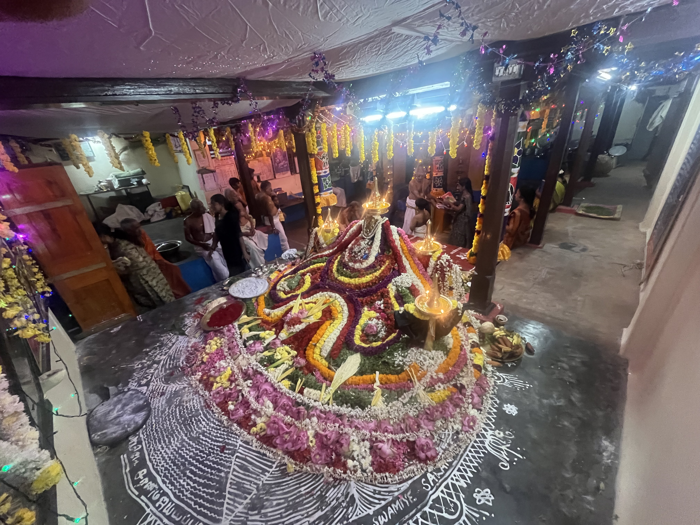
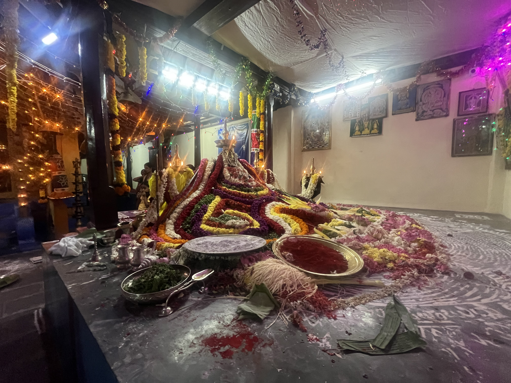

🪔🪔🪷🪔🪔
Krishnapuram Brahamana Samudayam
Trivandrum District, Kerala State
ശ്രീ കൃഷ്ണ ക്ഷേത്രം
"Sarva-dharman parityajya
mam ekam sharanam vraja"
— Bhagavad Gita 18.66
▾
Explore
ശ്രീ കൃഷ്ണ ക്ഷേത്രം
"Sarva-dharman parityajya
mam ekam sharanam vraja"
— Bhagavad Gita 18.66
❧ ✦ ❧
Krishnapuram Brahmana Samudayam, Sri Krishna Swamy Temple, Neyyattinkara, an ancient and powerful shrine in south Kerala, is dedicated to Lord Sri Krishna. This temple is situated in beautiful serene and natural green surroundings by the side of Neyyar River.
This temple is of great historic importance as well. The history behind the construction of this temple is that, the Travancore prince Anizhamthirunal Marthanda Varma constructed an agraharam and temple to accommodate brahmins and then the idol which was planned to be installed in the new temple where ammachi plavu is located, was installed here in our temple, since the powerful idol had to be installed facing east direction in banks of Neyyar river and in an environment surrounded with vedic mantras.
☸ ✦ ☸
ശ്രീ കൃഷ്ണ ഭഗവാൻ
The presiding deity is Lord Sree Krishna, the eighth avatar of Lord Vishnu, revered as the Supreme Being in Vaishnavism. He is worshipped here in his Chaturbhuja form — holding the Sudarshana Chakra, Panchajanya conch, Kaumodaki mace, and a lotus — radiating eternal love, wisdom, and protection to all devotees.
"Yada yada hi dharmasya, glanir bhavati Bharata
abhyutthanam adharmasya, tadatmanam srijamy aham"
— Bhagavad Gita 4.7
ഗണപതി ഭഗവാൻ
Lord Ganapathy — the elephant-headed son of Lord Shiva and Goddess Parvati — is enshrined within the temple complex as the Vighneshwara, the remover of all obstacles. Devotees offer prayers to him before commencing any auspicious undertaking, for he bestows wisdom, prosperity, and an auspicious beginning to every endeavour.
He is depicted in his Gajanana form with a broken tusk, a modaka sweet in hand, and his beloved vehicle — the mouse — at his feet, symbolising that even the mightiest obstacles can be overcome with divine grace and humility.
"Vakratunda Mahakaya, Suryakoti Samaprabha
Nirvighnam Kuru Me Deva, Sarva Karyeshu Sarvada"
— Ganapathi Sloka
🐍 ✦ 🐍
Adjacent to the temple lies the sacred Nagar Kavu — a serpent grove revered as the abode of Naga Devatas (serpent deities). This ancient grove, nestled near the banks of the Neyyar River, is one of the most spiritually potent spots in the Neyyattinkara region.
The Nagar Kavu is shaded by old trees — pala, ilippa, and arali — whose roots intertwine with the earth like the coils of the divine serpent. Stone sculptures of Nagaraja and Nagayakshi stand watch beneath the canopy, garlanded with turmeric and sacred threads by generations of devotees.
Serpent worship in Kerala is an ancient Dravidian tradition, and the Kavu near Neyyar River carries the prayers of countless families who come here seeking fertility, family harmony, relief from Sarpa Dosha, and the welfare of their lineage.
The sound of the flowing Neyyar River nearby adds a natural sanctity to the grove, believed to amplify the divine energy of the Nagar Kavu and carry the prayers of devotees forward.
Nagar Kavu · Neyyar River
The consecration ceremony of serpent deities performed by temple priests with elaborate rituals, mantras, and offerings of turmeric, milk, and flowers.
Special puja performed on Ayilya nakshatra days, believed to be the most auspicious time to worship Naga Devatas and seek relief from ancestral curses.
📅 Monthly · Ayilyam Star✦ ✦ ✦
The Malayalam New Year, celebrated with Vishukkani — an auspicious arrangement of golden cucumbers, golden cassia flowers, and fruits before the deity at dawn.
📅 April · MedamDay temple prathishta done
📅 May–June · IdavamThe birth anniversary of Lord Krishna, celebrated with great devotion through night-long bhajans, Dahi Handi, and elaborate decorations of the sanctum.
📅 August · ChingamThe birth anniversary of Lord Ganesha, celebrated with great devotion through night-long bhajans, Dahi Handi, and elaborate decorations of the sanctum.
📅 September · ChingamThousands of oil lamps are lit throughout the temple premises, illuminating the gopuram and surroundings in a magnificent sea of golden light.
📅 November–December–January · VrishchikamThe grand 41-day annual festival featuring special archanas attracting thousands of devotees.
📅 November–December · Kumbham☸ ✦ ☸
| Pooja / Seva | Time | Notes |
|---|---|---|
| Nirmalyam നിർമ്മാല്യദർശനം | 5:30 AM | First viewing of the deity |
| Thiruvanandal തിരുവനന്ദൽ | 5:45 AM | Morning abhishekam |
| Usha pooja ഉഷ പൂജ | 6:00 AM | Usha pooja |
| Temple Closes ക്ഷേത്രം അടക്കൽ | 8:30 AM | Afternoon break |
| Evening Opening വൈകുന്നേരം തുറക്കൽ | 5:30 PM | Evening darshan begins |
| Deeparadhana ദീപാരാധന | 6:30 PM | Lamp offering — most auspicious |
| Temple Closes ക്ഷേത്രം അടക്കൽ | 7:30 PM | Night closure |
✦ Timings may vary on festival days and special occasions. Please confirm with the temple office.
❧ ✦ ❧
❧ ✦ ❧


